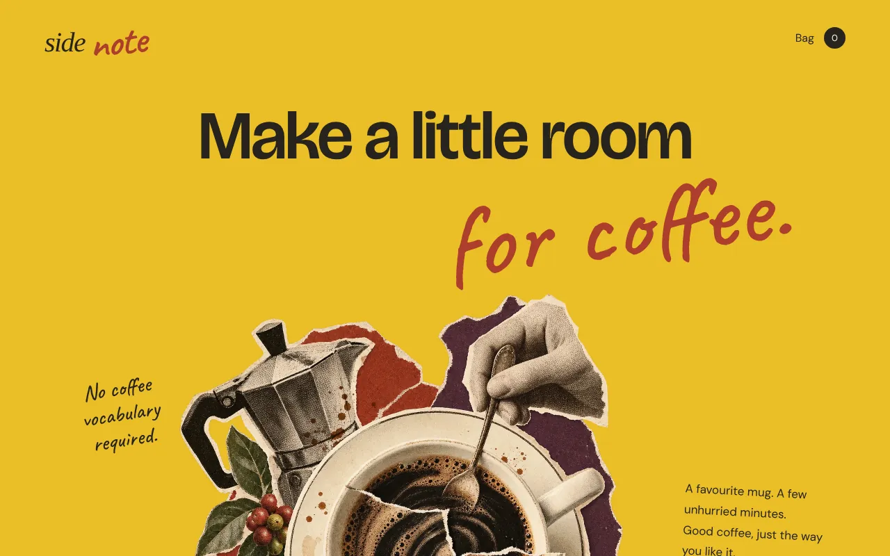
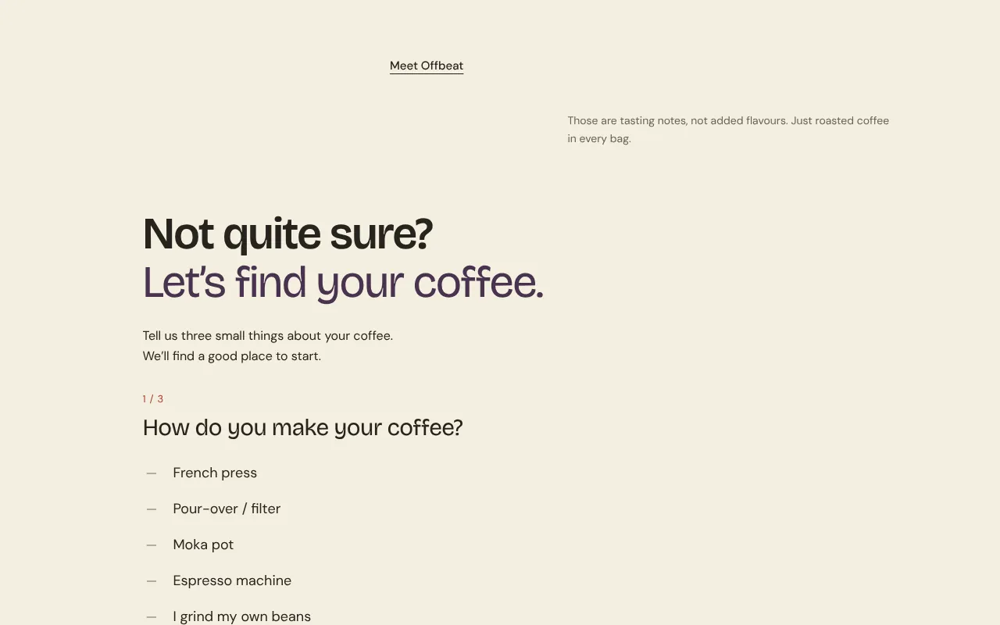
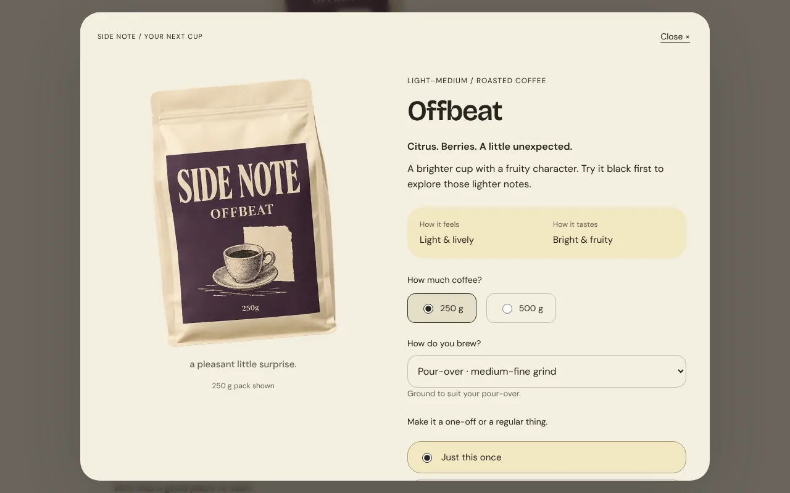
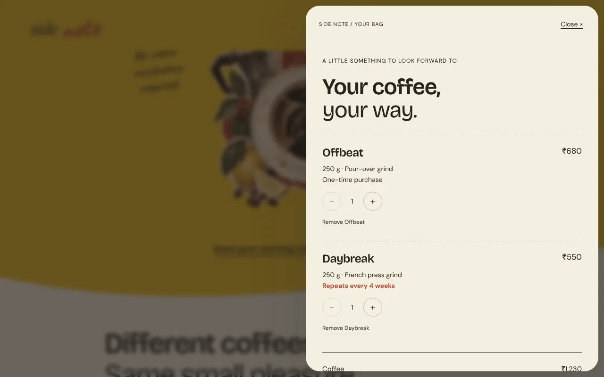

Case study · Concept · Coffee shop
Side Note: find a coffee that fits the morning you already have.
A fictional roaster for everyday drinkers: three coffees, plain words instead of coffee jargon, and a shop that helps you choose the right bag, grind and rhythm before you buy.
- What it is
- A self-initiated concept for a fictional direct-to-consumer roaster in India
- The flows
- Three-question finder → explained recommendation → product configurator (size, grind from your brewer, one-off or every four weeks) → bag → demo checkout
- What I did
- Art direction, UX, copy, frontend. Collage, packaging and gesture drawings generated from a reference-led art direction
- Status
- Demo. No order, payment or subscription is created
- Link
- Open Side Note

The brief I set myself
People can’t taste coffee through a screen, and the words roasters use—roast, origin, process, grind—don’t help a first-time buyer. The useful question isn’t only what a bag tastes like, but whether it suits the brewer at home and the way someone actually drinks coffee.
Trade’s coffee quiz was a useful real-world reference: it recommends from brew method, milk and taste preferences. The brew guide starts from Hario’s V60 recipe, credited on the page.
What the site does
- The opening. A favourite mug and a few unhurried minutes. Two ways in: meet the coffees, or get help choosing.
- Three coffees. Daybreak, Slow Morning and Offbeat, described by taste in everyday words, with roast, size and price up front.
- The finder. Brewer, milk, taste. Three questions, a recommendation with its reasons, and an honest branch for people who don’t own a brewer yet.
- A small brew guide. One pour-over recipe to start from, with its source.
- Plain answers. Is this instant? Which grind? How much is in a bag? Do I have to subscribe?
- Configure, bag, demo checkout. Size, grind matched to your brewer, one-off or every four weeks. The bag keeps today’s total apart from any recurring total before you continue.



Key decisions
Start with the familiar ritual.
Warm colour, printed-paper artwork and tasting notes in everyday words make a specialist product friendly without making it childish.
Translate preferences into a choice.
A three-question finder uses equipment, milk and taste to explain its recommendation, and passes the suggested grind into the product so nobody has to know what “medium-fine” means.
Make the order understandable.
Size, grind and one-time versus repeat purchase are explicit. The bag separates today’s total from any future recurring total before the demo order preview.
Directions I dropped
A three-item navigation and numbered section captions felt generated, so they went. Oval option chips in the finder became a handwritten list, then a plainer typed one.
Sharp rectangular sections became one continuous paper landscape. And the handwriting, which started everywhere, was cut back to four accents so the rest could be read.
What I’d measure if it were live
- Finder starts and completions, and where people stop.
- Add-to-bag rate after the finder versus after browsing.
- Grind choices against brewer answers, and how many pick whole bean without a grinder.
- The share choosing repeat delivery, and how many change it in the bag.
- Checkout completion, and which FAQ answers are read before buying.
Side Note is a fictional brand made for a portfolio. The coffees, tasting profiles, prices and policies are sample content. The collage, packaging and gesture drawings were generated from a reference-led art direction. The cart and checkout work on the page only: no data is sent, no payment is taken, nothing is ordered.